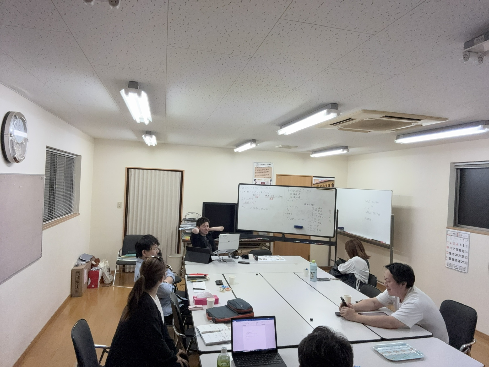
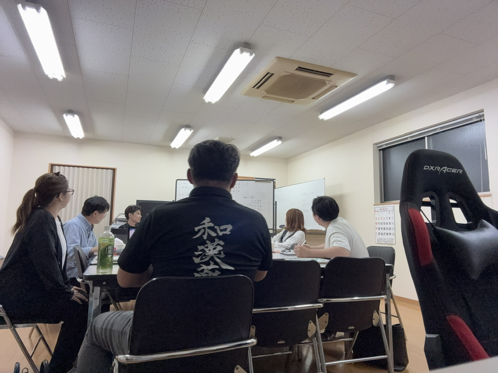

志心の会 通信

本年度も、OB例会の季節がやってまいりました。
志心の会では今年も、毎年恒例の「OB例会」を7月と12月に開催いたします。 本号では、7月例会の開催概要・登壇者と、12月例会の方針、名簿整備のお願いをお伝えします。
本年度の7月OB例会は、2026年7月25日（土）の開催で決定いたしました。同友会日程との重複を避け、また各社の月末業務を考慮しての日取りです。
- 開 催 日
- 2026年7月25日（土）
- 時 間
- 18:30 〜 20:40（18:00 集合 ／ 18:15 受付開始）
- 会 場
- 未定
確定次第、本通信および公式LINEにて改めてご案内いたします。 - 講 師
- 橋本佳奈 さん（9期）
中村 薫 さん（13期） - 締めの言葉
- 松尾 孝 講師
- 対 象
- 志心の会会員（すべての期のOB・OGを歓迎いたします）
これまで例会のメインプログラムは「チャレンジ講義」という名称で運営してまいりましたが、本年度より 「マネゼミ出身者の実践報告」 と呼称を改めることといたしました。
講義形式で“マネゼミで何を学んだか”を伝えるのではなく、卒業後の数年間で 「学びをどう実生活・経営に活かしてきたか」「自分自身がどう変わったか」「どんな仲間ができたか」 ―― 受講前後の心境と行動の変化を、OB・OGご自身の言葉で語っていただく場にしたいと考えています。
―― それが、本年度からのOB例会の中心です。
本年度の登壇者が決まりました
中村 薫 さん（13期）
締めの言葉は 松尾 孝 講師 よりいただきます。マネゼミ全体を貫く視点で、お二人の実践報告を受け止めていただく時間です。
本年度の7月例会は、お二人の実践報告とそれぞれの質疑応答、松尾講師の締めの言葉までを、約2時間にぎゅっと凝縮した構成です。
※ 時間配分は当日の進行により若干前後する場合がございます。

本年12月のOB例会は、テーマを「ビジネス交流」に据えて企画を進めております。志心の会の目的のひとつである 「OB・OG同士のビジネス交流への寄与」 に正面から取り組む回といたします。
メイン登壇に加え、ご参加の皆さまそれぞれが 5〜10分の自社紹介 をしていただく構成を予定しています。これまでお名前は知っていても事業の中身までは知らなかった、というOB同士のつながりを、この機会に育てられればと考えております。
- 開催時期
- 2026年12月 上旬〜中旬（金または土曜を予定）
- テ ー マ
- ビジネス交流
- 構 成
- メイン登壇 ＋ 参加者各自による自社紹介（5〜10分）
- 会 場
- パレア（規模に応じて会議室を選定）
※ 12月例会の詳細は、改めて本通信および公式LINEにてご案内いたします。
本年度のOB例会の運営にあたり、志心の会の 会員名簿を2026年度版として整え直しております。とくに11期〜14期の皆さまの情報が一部更新できておらず、ご案内が行き届かない懸念があります。
以下に該当する方は、お手数ですが企画チームまでご一報いただけますと幸いです。
- 携帯電話番号が変わった方
- 勤務先・所属が変わった方
- これまで案内が届いていなかった、または届きにくくなっていた方
- ご近所のOB・OGで「最近見かけないな」という方をご存じの方
いただいた個人情報は、志心の会の運営目的に限り使用し、パスワード管理下で適切に保管いたします。
登壇のご応募、参加のご意向、ご質問・ご要望など、いずれも企画チームまでお気軽にお寄せください。
- 窓 口
- 志心の会 OB例会 企画チーム（佐々木・中村・新町・清田）
- 連 絡 先
- 志心の会 公式LINE ／ 各企画メンバーへ直接ご連絡ください
- 次回打合せ
- 2026年6月5日（金） 18:45 開始
マネゼミの学びは、卒業して何年経っても、ふとした瞬間に立ち戻る場所であり続けます。
7月25日、久しぶりにお顔を拝見できますことを、企画チーム一同、心より楽しみにしております。